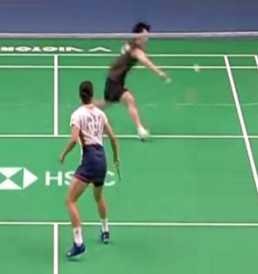
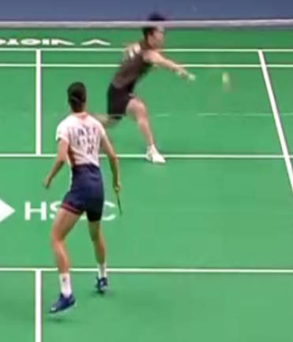
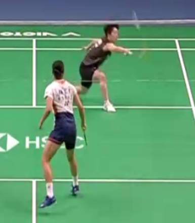
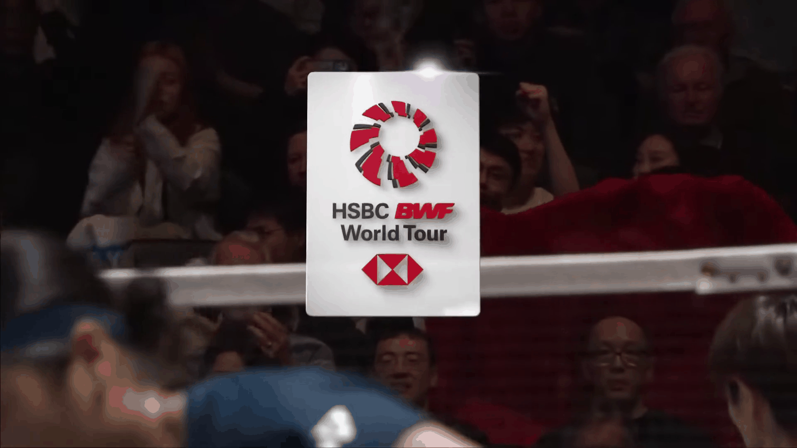
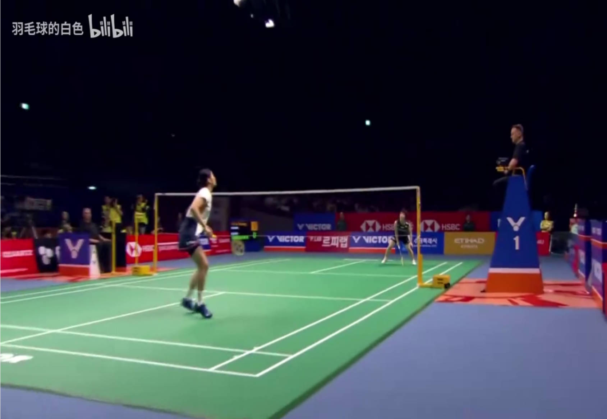

🏸 羽毛球标注工具使用指南 v2.0
写在前面： 标注数据的质量直接决定分析结果的准确性。请务必仔细阅读“标注共识”部分，遇到不确定的球请及时沟通。
1. 软件基础操作
推荐工作流：
- 文件管理： 请将视频文件和对应的标注文件（JSON）放在同一目录下。
- 粗略打点： 先把一局的节奏标完（S局开始 -> R发球 -> I击球 -> E回合结束）。此时不关注技术细节。
- 时间检查： 整体检查一遍击球时间点是否准确（参考下文“标注共识”）。
- 细节补全： 推荐使用“审阅模式”，补充正反手、技术动作等细节。
- 保存： 养成随手 Ctrl + S 的好习惯。
2. 常用快捷键
| 功能 | 快捷键 | 说明 |
|---|---|---|
| 播放/暂停 | Space | 最常用的键 |
| 逐帧移动 | ← / → | 精确寻找击球那一帧 |
| 微调事件帧 | Shift + ← / → | 不用删除重录，直接把当前选中的事件前/后移一帧 |
| 添加击球 | I | Insert Shot，标记普通击球 |
| 回合控制 | R (开始) / E (结束) | Rally Start (发球) / End (死球) |
| 局控制 | S / Shift+S | Set Start (新的一局) / Set End (本局结束) |
| 编辑详情 | Enter | 打开选中事件的技术动作选择框 |
3. 标注共识与标准 (核心必读)
3.1 标注击球节点 (Shot)
原则： 击球的“那一瞬间”。
- 判断标准： 如果下一帧球已经明显飞出去了，那么这一帧就是击球帧。
- 不要标在挥拍过程中，也不要标在球已经飞远了的时候。

❌ 太早：球拍还没接触到球

✅ 正确：接触瞬间，下一帧球产生形变

❌ 太晚：球已经飞出一段距离
3.2 标注回合结束节点 (Rally End)
分三种情况处理：
- 球落地（界内/界外）：
- 清晰可见： 标在球触地弹起前的那一帧。
- 被遮挡： 如果落点被身体或广告牌遮挡，凭感觉标在落地的那一帧即可。
- 球未落地（被接住）：
- 比如发球失误被对面接住，或死球后手接球。
- 标准： 标在对方接触球（第二次击球）后的后一帧即可，不做精确微秒级要求。
- 飞出场外太远：
- 标准： 标在球飞出场地底线/边线后的若干帧即可，主要为了标记回合结束状态，不做精确要求。
3.3 处理切画面/回放丢失 (Cut Scenes)
这是比赛视频中常见的问题（上一局回放还没播完，下一局已经发球打了几拍了）。
- 对齐原则： 当直播画面切回比赛现场，出现第一个清晰击球画面时，此时的人物身份必须对上（谁在击球，谁在跑动）。之前凑数的击球统一标注技术细节为 不适用 - 凑帧数。
- 丢失部分： 对于回放期间被“吃掉”的那些击球(包括击球时刻前面10-20帧处于回放环节，不可见），统一在第四列视角选项中选择 击球缺帧。
- 视角变化： 对于非正常的俯视视角，统一在第四列视角选项中选择 视角异常。

缺帧演示：击球前被回放遮挡

视角异常：非正常俯视视角
4. 常见动作与疑难图解
对于一些难以肉眼判断的技术动作，请参考以下图示标准。
标准击球帧演示
注意看，这是拍面接触球的瞬间，下一帧球产生形变飞出。这就是标准的标注点。
被动抽球 vs 挑球
如果击球点在膝盖以下，且发力方向主要向前上方，归类为挑球；如果主要向前平抽，归类为抽球。
封网 vs 推球
封网通常指在网前极短促的拦截动作；动作幅度较大、有明显挥拍轨迹的推底线，归类为推球。
击球帧前帧缺失
击球帧清晰可见，可击球帧前10-20帧不可见，统一标注技术细节为 不适用 - 缺帧
如果不确定某个球是什么技术动作，请先标注为 “待定”，并记录下时间点（截图或发群），不要随意猜测。